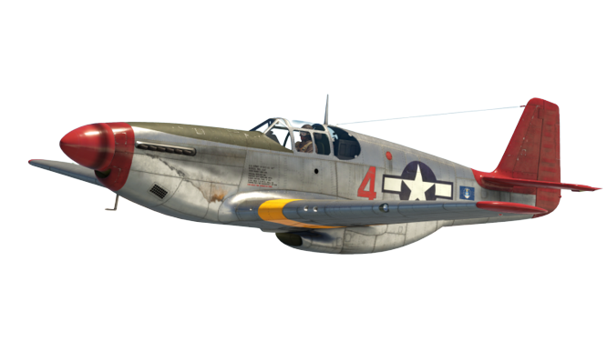
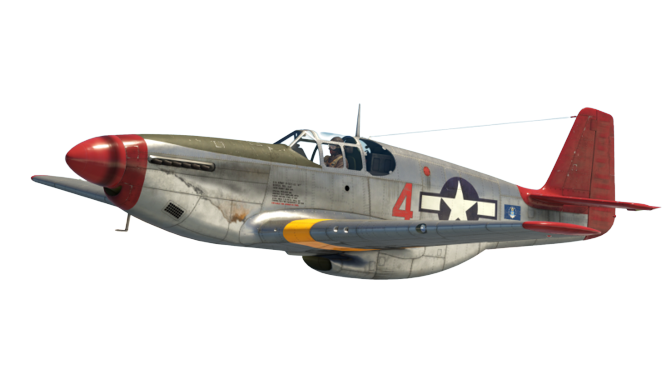

-
Spitfire MH434

Descrição
Fabricante: Supermarine Aviation Works
Período de produção: 1938–1948
Velocidade máxima: 650 km/h
Altitude máxima: 11.500 m
Armamento: (2x) canhões 20 mm Hispano Mk.II / (4x) metralhadoras 7,7 mm Browning
-
Messerschmitt Bf-109
Descrição
Fabricante: Messerschmitt AG
Período de produção: 1937-1945
Velocidade máxima: 668 km/h
Altitude máxima: 11.500 m
Armamento: (1x) canhão 20 mm MG 151 / (2x) metralhadoras 13 mm MG 131
-
P-51 Mustang
 
Descrição
Fabricante: North American Aviation
Período de produção: 1941-1946
Velocidade máxima: 698 km/h
Altitude máxima: 12.700 m
Armamento: (6x) metralhadoras 12,7 mm M2 Browning
-
A6M Zero
Descrição
Fabricante: Mitsubishi Heavy Industries
Período de produção: 1940–1945
Velocidade máxima: 510 km/h
Altitude máxima: 10.300 m
Armamento: (2x) canhões 20 mm Type 99 Model 1 / (2x) metralhadoras 7,7 mm Type 97
-
Yak-3

Descrição
Fabricante: A.S. Yakovlev Design Bureau
Período de produção: 1944-1952
Velocidade máxima: 650 km/h
Altitude máxima: 10.400 m
Armamento: (1x) canhão 20 mm ShVAK / (2x) metralhadoras 12,7 mm Berezin UB